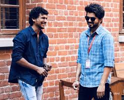

Master is a 2021 Indian Tamil-language action drama film directed by Lokesh Kanagaraj and produced by XB Film Creators. The film stars Vijay in the titular role, alongside Vijay Sethupathi, Malavika Mohanan, Andrea Jeremiah, Arjun Das, Shanthanu Bhagyaraj, and Gouri G. Kishan.
For filmmaker Mariama Diallo, writing “Master,” a “spooky drama” about Black women navigating the politics at a tony New England college, was a way of excising the microaggressions and racism she'd suppressed during her undergraduate years at Yale.

Bhavani is the first supervillain played by Vijay Sethupathi to appear in a film by Lokesh Kanagaraj, the second being Sandhanam.